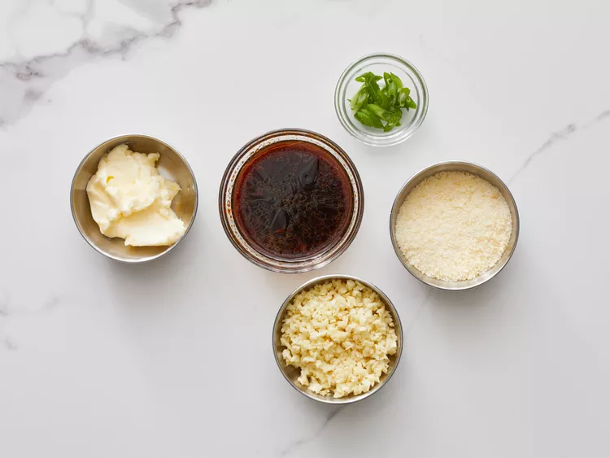
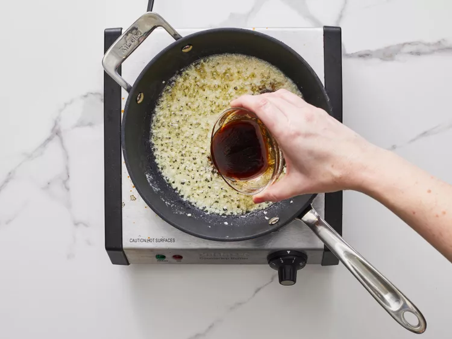
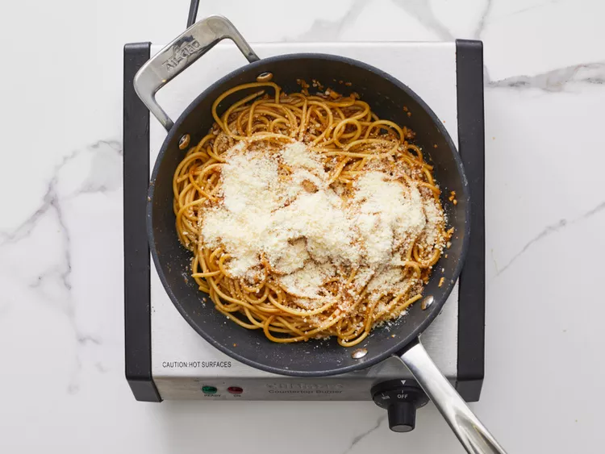

Gather all ingredients. Stir soy sauce, oyster sauce, Worcestershire sauce, fish sauce, sesame oil, and cayenne pepper together in a small bowl for the secret sauce.

Melt butter in a skillet over medium heat. Add garlic; cook and stir just until fragrant, about 1 minute. Quickly stir in the secret sauce and turn off the heat.

Bring a large pot of lightly salted water to a boil. Cook spaghetti in boiling water, stirring occasionally, until tender yet slightly firm to the bite, about 12 minutes.
Transfer spaghetti into the sauce using tongs, bringing some of the cooking water with it. Toss until well coated; stir in Parmesan cheese. Splash in more pasta water if noodles are too dry.

Plate noodles; garnish with green onions and red pepper flakes.